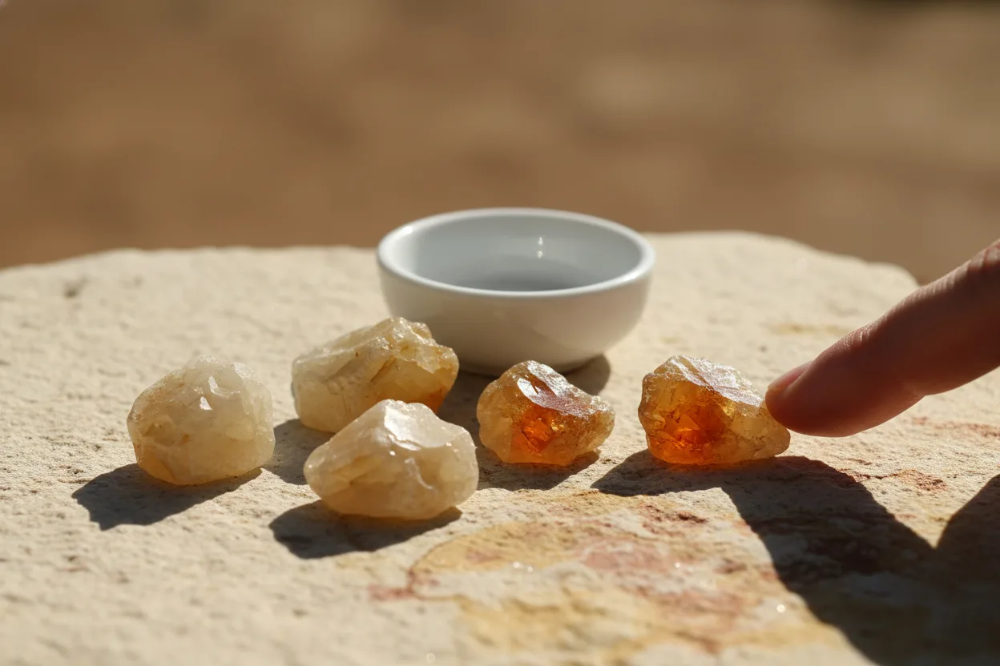
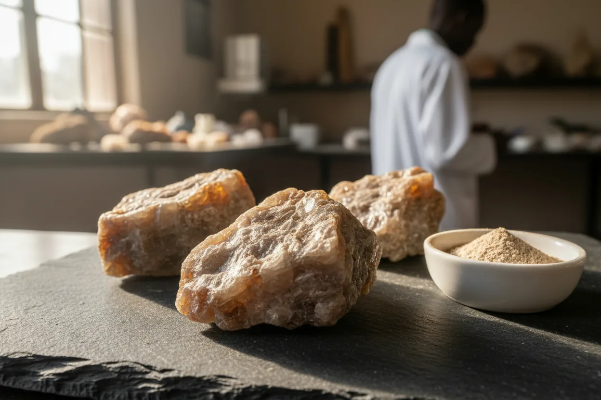

Zimbabwe hosts tungsten deposits that have historically produced high-grade scheelite and wolframite concentrates for specialist smelters. AYCAS sources from licensed Zimbabwean mines under MMCZ permitting and ships to tier-one international refiners.
Tungsten is a strategically critical metal — hard-metal tooling, superalloys, specialty steels and electronic applications all depend on a consistent supply. AYCAS operates at the origin end of that chain: sourcing from licensed Zimbabwean concentrate producers, blending to buyer specification where required, and shipping under MMCZ-permitted export to tungsten-specific refiners internationally.
Scheelite concentrate (calcium tungstate, CaWO₄) is the principal tungsten ore found in Zimbabwean skarn deposits. We source gravity-processed and froth-flotation concentrates, with assay penalties for deleterious elements (molybdenum, tin, phosphorus) typical of specialist tungsten contracts.

Wolframite concentrate ((Fe,Mn)WO₄) is the alternative tungsten mineral, typically sourced from vein and greisen deposits in the Zimbabwean tungsten belt. We supply on specification for smelters equipped to process wolframite feeds, with iron and manganese ratios declared per lot.

Tungsten concentrate shipments carry the full mineral-export documentary set. Every lot is permit-cleared before loading and independently assayed before documents are released.
Send us your target specification, volume and destination — we'll come back with availability, assay ranges from current producers and an indicative quotation within five working days.
Request a trade brief